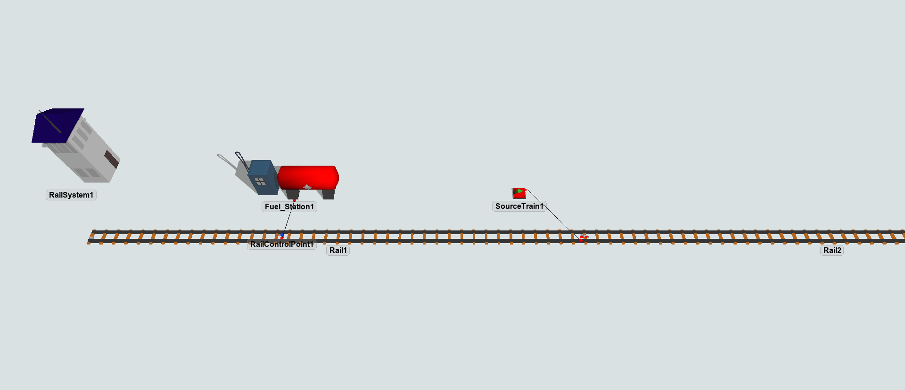
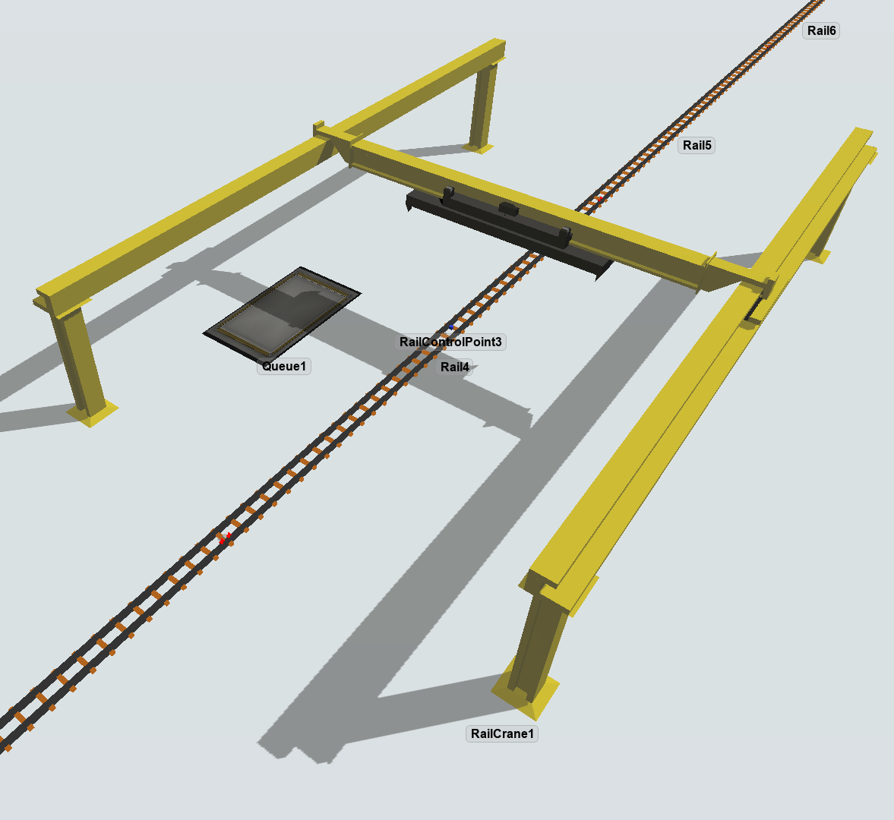
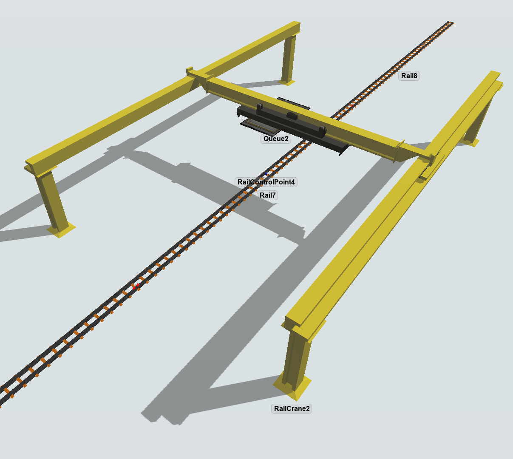
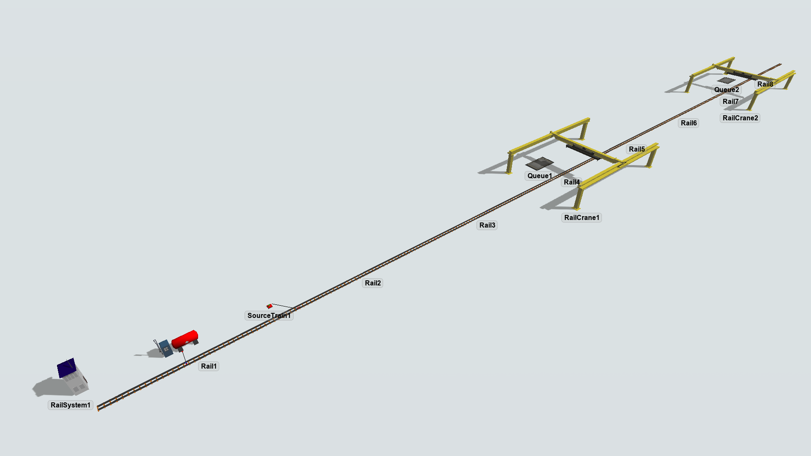
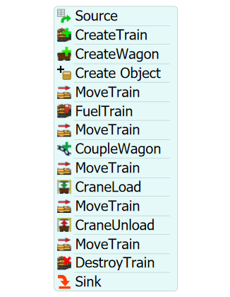

Exercise Information
A train needs to fill up at a fuel station. The train can hold a maximum of 150L of fuel,
it is currently holding 10L and using 5L/Km and the fuel station is full with 100L.
After that, the train needs to couple a wagon, go to a crane that will load a flow item,
which is in a 7x4 queue and is 4x3 in size, onto the train and travel to another crane
and finally unload the flow item into a 7x4 queue.
Note: Place 1 unit per flow item at the fuel station.
Step 1
Creating objects
In order to achieve the solution for the problem, you should create the
following objects:
- Create 8 Rails.
- Create a RailControlPoint and put on the middle of Rail1.
- Create a Fuel Station and connect (using S key) to the RailControlPoint on Rail1.
- On fuel station, Max and Start Weight to 100. Unit per item: 1.
- Create a SourceTrain.
- Connect the SourceTrain (using A key) to Rail2.
- Create a RailControlPoint and put on middle of Rail3.
- Create a RailControlPoint and put on middle of Rail4.
- Create a RailControlPoint and put on middle of Rail7.
- Create a RailCrane above Rail4.
- Create a Queue under the RailCrane.
- Change the xsize of the Queue to 7 and ysize to 4.
- On Queue, set the "On Entry" trigger with Visual > Set Location, Rotation or Size.
The values are: For "Set" enter Size, "Object" enter Item, "X Size" enter 4, "Y Size" enter 2 and "Z Size" enter 1.
- Create a RailCrane above Rail7.
- Create a Queue 7x4 under the new RailCrane.
- Create a Sink near Rail1.



Your model should be looking like this:

Step 2
Processflow Configuration
In order to achieve the solution for the problem, you should create the
following processflow tasks:
- Create a Schedule Source.
- Create a "CreateTrain" activity.
- Create a "CreateWagon" activity.
- Create a "Create Object" activity.
- Create a "MoveTrain" activity.
- Create a "FuelTrain" activity.
- Create a "MoveTrain" activity.
- Create a "CoupleWagon" activity.
- Create a "MoveTrain" activity.
- Create a "CraneLoad" activity.
- Create a "MoveTrain" activity.
- Create a "CraneUnload" activity.
- Create a "MoveTrain" activity.
- Create a "DestroyTrain" activity.
- Create a Sink.
Your processflow should be looking like this:

To configure your processflow tasks follow the steps:
- Create a Schedule Source.
-
On "CreateTrain" activity, point the "SourceTrain" reference to your Source Train object.
Set "Max Fuel" and "Current Fuel" to 150 and the "Fuel Usage" to 5.
-
On "CreateWagon" activity, point the "Control Point" reference to the
RailControlPoint on Rail3 and set wagons quantity to 1.
-
On "Create Object" activity, check "Create In" and reference to the Queue1.
-
On "MoveTrain" activity, set train reference to "token.train" and destiny to the
RailControlPoint on Rail1.
-
On "FuelTrain" activity, point the "Control Point" reference to the
RailControlPoint on Rail1.
-
On the second "MoveTrain" activity, set train reference to "token.train" and destiny to
the label "token.wagon".
-
On "CoupleWagon" activity, set train reference to "token.train" and wagon
reference to "token.wagon".
-
On the third "MoveTrain" activity, set train reference to "token.train" and destiny to
the RailControlPoint on Rail4.
- On "CraneLoad" activity, set "Crane" reference to RailCrane1.
-
On the fourth "MoveTrain" activity, set train reference to "token.train" and destiny to
the RailControlPoint on Rail6.
- On "CraneUnload" activity, set "Crane" reference to RailCrane2 and "Destination" reference to Queue2.
-
On the fifth "MoveTrain" activity, set train reference to "token.train" and destiny to
Rail1.
-
On "DestroyTrain" activity, set train reference to "token.train" and "Sink" reference
to the Sink next to Rail1.
With this configuration your model is ready.